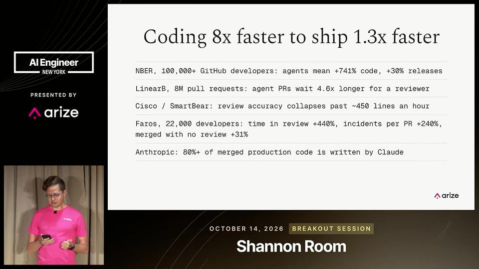
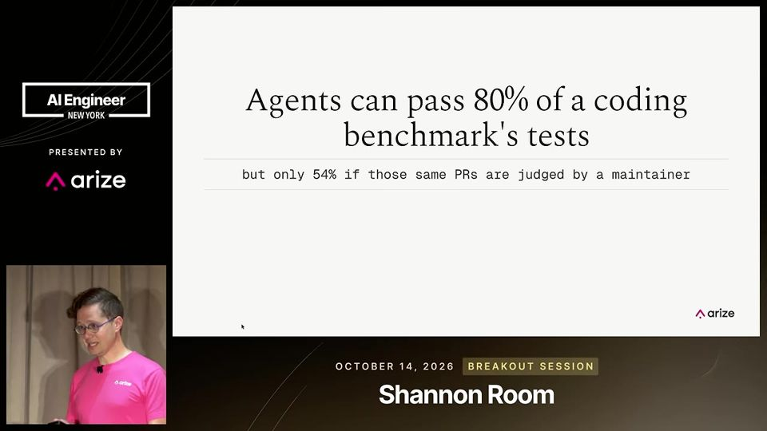
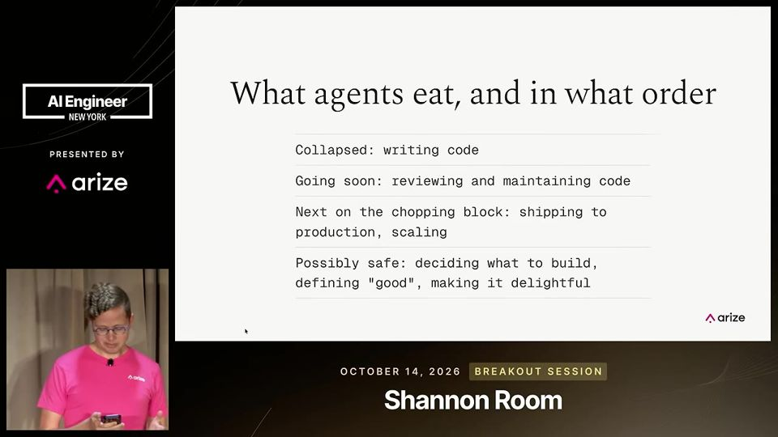
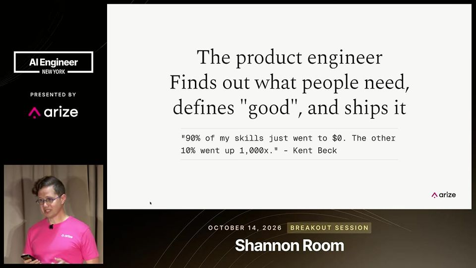
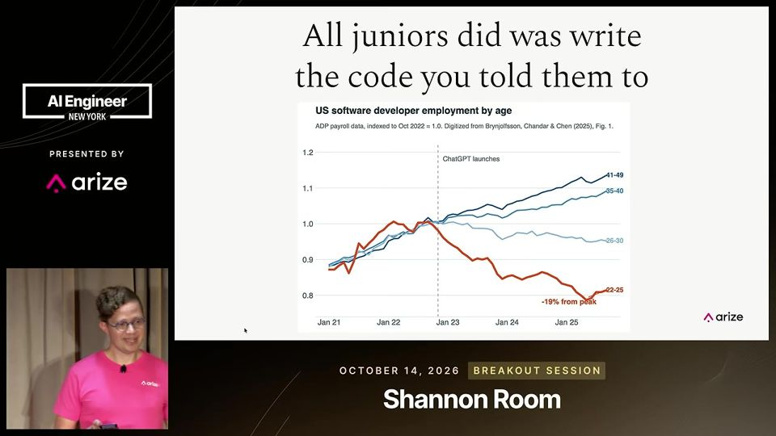

AI Writes the Code. So What's Left for Engineers? - Laurie Voss, Arize AI
Código ficou barato, então o gargalo migra até sobrar o trabalho humano de descobrir o que as pessoas precisam e definir o que é bom.
Em 3 frases
Laurie Voss, da Arize AI, diz que agentes tornaram escrever código quase grátis e que o gargalo andou para a revisão de código, depois para operações e segurança.
Para ele, o que sobra para humanos é entender o que o cliente quer e escrever o que significa "bom" em specs, rubricas e evals. Ele chama esse papel de product engineer (engenheiro de produto).
Ele alerta que a contratação de juniores desabou e que as equipes precisam formar esse perfil de propósito, e fecha com quatro ações práticas para líderes.
Antes de ler
- Teoria das restrições theory of constraints
- Complexidade essencial e acidental essential and accidental complexity (Fred Brooks)
- Engenheiro de produto product engineer
- Forward deployed engineer engenheiro implantado junto ao cliente
- Blast radius raio de impacto de uma falha
- Benchmark teste padronizado de desempenho
Escrever código ficou barato, revisar não
Quem usa agentes autônomos escreve cerca de oito vezes mais código, mas entrega só 30% mais rápido. O gargalo é a revisão: a capacidade humana de ler código cai depois de umas 450 linhas por hora, e um diff de 10 mil linhas levaria cerca de uma semana.

Revisores de IA ainda discordam entre si
Em um teste com quatro revisores de IA, todos acharam bugs reais, mas nenhum achou os mesmos bugs. Um benchmark da Cognition, que pergunta se o mantenedor aceitaria o PR, derrubou a taxa de sucesso de 87% para 54%. Falta ao agente o senso do que é "bom" naquele projeto.

Teoria das restrições: o gargalo se move
Pela teoria de Goldratt, todo sistema tem um gargalo, e acelerar outra etapa não adianta. Quando você resolve o gargalo, ele aparece em outro lugar. Voss prevê a sequência revisão, operações, segurança e, por fim, a definição do que é bom.

Mais 2 ideias deste talk
O engenheiro de produto reúne analista e programador
Voss defende que as funções de product manager e engenheiro estão voltando a ser uma só, como o analista de sistemas dos anos 1960. O product engineer descobre a necessidade, define o que é bom e entrega com agentes digitando. Ele cita vagas de forward deployed engineer, que subiram 800% em 9 meses de 2025.

Juniores sumiram e ninguém os forma
O gráfico de estatísticas de emprego mostra o emprego de engenheiros de 22 a 25 anos em queda desde 2023, enquanto o de 41 a 49 anos sobe. O Google forma cerca de 50 pessoas por ano no programa de APM, e Voss estima que o setor precisaria de dezenas de milhares.

O palestrante é head de developer relations da Arize, empresa de evals, e fecha recomendando evals. Isso é conflito de interesse. Ele admite que pede "confie em mim" sobre as fontes e que cai no vício de achar que a parte que ele gosta é a mais difícil de automatizar. As previsões de 5 a 10 anos para operações e segurança não têm evidência. Ele também diz que a estimativa de 10 mil profissionais por ano é sua e que não cita a fonte no palco.
O que fazer com isso
- Escreva o que significa "bom" para as tarefas que você delega à IA, na forma de spec, rubrica ou eval, em vez de depender de revisão manual.
- Revise só o código de alto impacto (blast radius) e deixe revisores automáticos, de mais de uma ferramenta, para o resto.
- Delegue ao agente o que dá para verificar barato e monte um teste automático que diga se o resultado serve.
- Meça o que importa: quanto você entrega de fato, quantos comentários de revisão são acatados e a diferença entre passar nos testes e ser aceito pelo mantenedor.